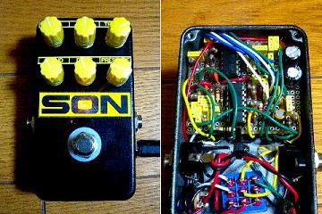
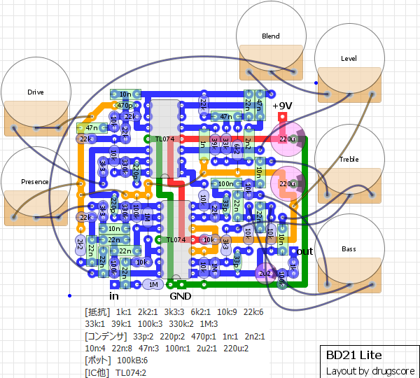
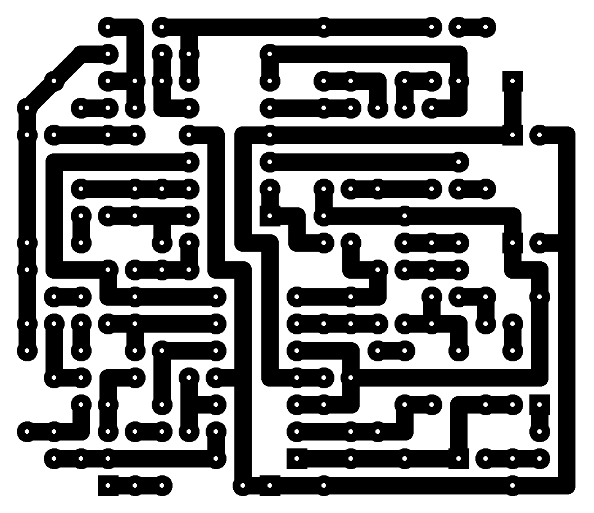
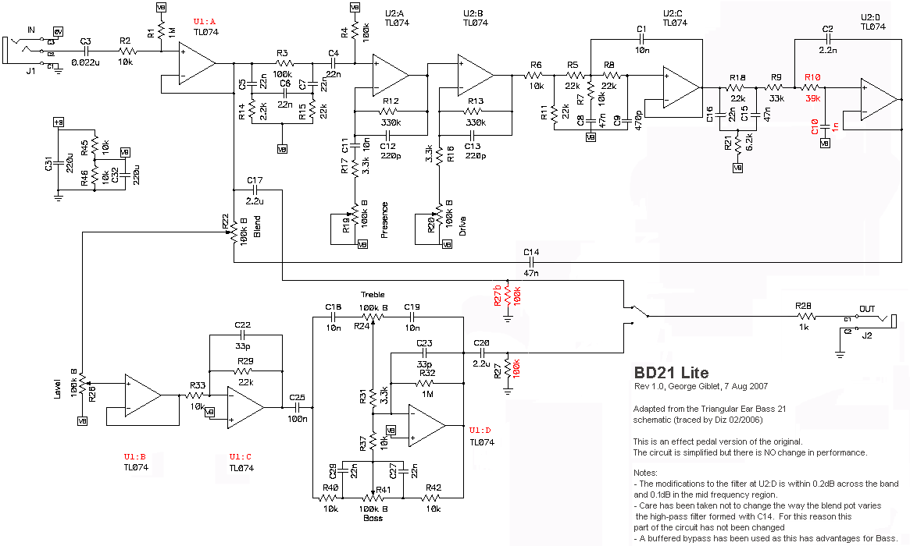
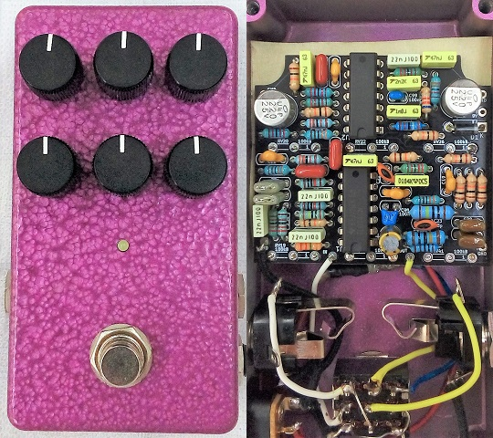

BD21 Lite (BEHRINGER BDI21)
2008年06月24日 カテゴリー：自作エフェクター（アナログ）
後の調査により、BEHRINGER BDI21はTECH21 SansAmp BASS DRIVERと回路が少し違うということが判明したため、記事タイトルを変更しました。誤った情報を掲載し続けてしまい申し訳ありません。（2022年1月15日追記）

最近ちょこちょこ適当にベースを弾いていて、ベース用エフェクターを何か作ってみたいと思い立ちました。ネットでいろいろ探してみると、DIYstompboxesにBD21 LiteというSansAmp BASS DRIVER DIらしい回路が見つかり、今回の製作に至りました。またもMXRサイズにケースに詰め込んでいます。
▽レイアウト

▽PCB（横55.9mm縦48.3mm）

トゥルーバイパスにしています。「Lite」なのでXLR OUTPUTやPARALLEL OUTPUTはありません。ポットが6個もあって配線がめんどくさかったです。
ベースの音のことはよくわかりません。あまり歪まないなぁという印象です。歪み系エフェクターという分類ではないかもしれません。TREBLEやPRESENCEを上げるとやはりノイズが目立ちます。機会があったら本物と比べてみたいところです。
今回は塗装済みのケースを使いました。ラベルはやっつけ仕事ですが意外とよくできた気がします。
---2010年4月14日追記---
コメント欄に書いた回路図がリンク切れしていましたので（無断で）載せておきます。
George Gibletさんが書いたもののようです。

そういえばタッキーパーツという店でBass Preampというキットを見つけました。このページの部品レイアウトと似ていますが、私とその店とは一切関係ございません。
---2012年4月4日追記---
上記の回路図の右下にTriangular Ear Bass 21という名前が書いてありますが、"Triangular Ear"というのはBEHRINGER（三角形に耳のマークがロゴ）のことを表していると思われます。つまりこの回路図はBEHRINGERのBDI21を簡略化したものであるようです。
---2020年4月2日追記---
PCBを発注して作ってみました（KiCadデータはこちら）。

ポットの配線がないのでかなり楽です。220uFの電解コンデンサは、表面実装用のものを足を曲げて使用しています。
コントロール： 上段 → Level Blend Drive 下段 → Bass Treble Presence